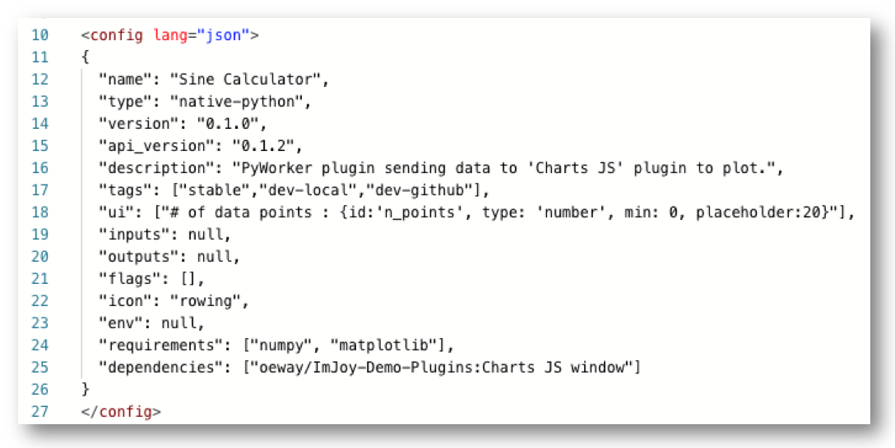
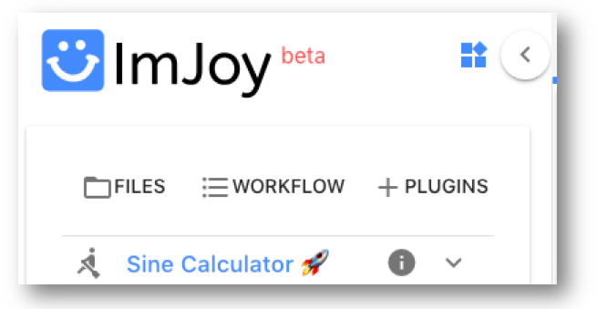
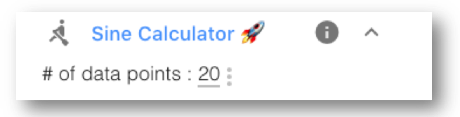
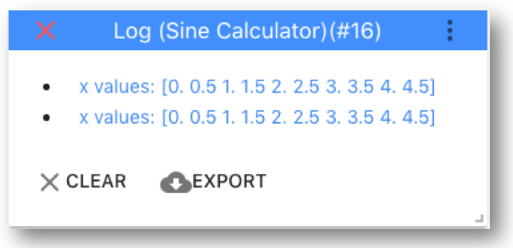
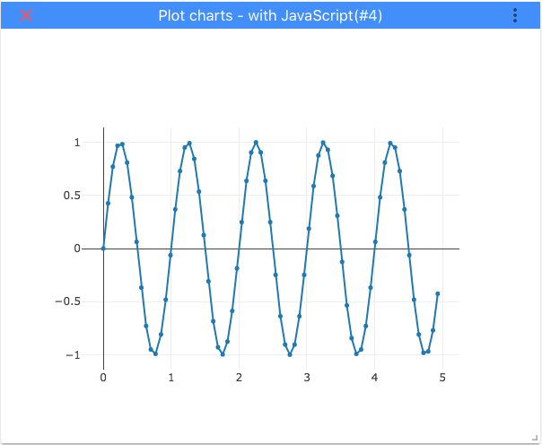

ImJoy plugin development¶
To launch ImJoy, simply open a browser and open https://imjoy.io.
You can then either check of some of the ImJoy plugins, or start working on your plugin.
Native Python plugin¶
You can add a plugin template with the + PLUGINS button.
For this simple tutorial, we create a native python plugin.
However, this plugin type requires the plugin engine. Yo can find a dedicate section in the ImJoy user manual for how to install the engine with this link.
Once you have the engine running and connected to ImJoy, you can save and execute
your plugins. The first step is to fill out some fields of the <config> block. To get started,
we name the plugin Sine Calculator (field name) and give a short description (description).

We can then save the plugin from its toolbar. Once save the plugin will show up with its
name in the plugin interface, and have a little rocket 🚀 next to its name. This indicates
that the plugin is powered by the plugin engine. Pressing on its name will run it,
for the template plugin it will simply show Hello world in the plugin engine.

Tag facilitate development¶
A very useful features are tags to change how a plugin is executed. Here we use
tags to differentiate between a development and stable release version. For this,
we add the following definition to the
"tags": ["stable","dev-local","dev-github"]
When you save your plugin, these tags will show up in the bar of the code editor.
For the next steps, select dev-local.
More information on tags can be found here
Using own module¶
During development, we will use our locally stored module.
This can be done in the <script> block. Here we have to add the
absolute path of the module PathToModule to the Python system path.
Please note the importlib.reload allows to reload the library if you have changes.
<script lang="python"> if 'dev-local' in api.TAG: import importlib import sys sys.path.insert(0, 'PathToModule') import outils importlib.reload(outils) </script>
We can then use this module in our Python code.
import asyncio class ImJoyPlugin(): # Run upon plugin execution async def run(self, my): x,y = outils.calc_sine(10) print(f'x values: {x}') print(f'y values: {y}')
When running the plugin, the calculated vectors will be shown in the Python plugin engine.
Note 1: that the engine does not support any graphics. We will show you how to plot the data further down.
Note 2: import asyncio and async def are used to permit asynchronous
function calls. For more details see here.
Create plugin user interface¶
For our example, the user has to specify how many data-points should be calculated.
The easiest way to obtain user input is by using the plugin user interface.
This can be done with the ui string the the <config block.
"ui": ["# of data points : {id:'n_points', type: 'number', min: 0, placeholder:20}"]
After saving the plugin, it has now a little menu that you can show by pressing on the arrow down symbol next to its name.

Each parameter that you specify in such an interface, can be retrieved by its
unique id from the object my, e.g. my.config.n_points for our example. To now
perform the calculations with the user specified number of points, simply use
x,y = outils.calc_sine(my.config.n_points)
Further information
- For more infos on the
uistring, see here. - For more advanced interfaces, you can use a
windowplugin that allows you to design an interface with HTML. We more information we refer to a dedicated dem here.
Showing results in ImJoy¶
This plugin is executed in the plugin engine, where we used print to show
some results. However, we would like to show plots and more detailed feedback
directly in the ImJoy app. For this, ImJoy provides a number of dedicated
API functions.
ImJoy log¶
For example, we could replace the print statements with the api function api.log.
api.log(f'y values: {y}') api.log(f'y values: {y}')
This then shows the results in the plugin specific log, which can be opened by clicking on the grey inverted exclamation mark next to the plugin name. Note that this log can be cleared and exported.

Plot results¶
The undoubtedly best way to show these data is with a plot.
In order to do this, we require a second plugin, this time a window plugin,
which will display data it receives. We use HTML to determine how the plugin
looks like, and JavaScript how the window plugin show process received data.
An excellent introduction to HTML, JavaScript with hands-on example is w3schools.com/.
We create a template window plugin, and name it Charts JS. You can find the
full here >>,
and we will reference specific sections throughout the explanations here.
This plugin is only useful when called from another plugin, which can be specified
in the <config> block. Such a "helper" plugin will show up in the plugin window, but
it will be greyed out and can't be run by clicking on its name.
"runnable": false
Many JavaScript libraries permit interactive plotting of data. Here, we used Plotly.js, a very rich library for interactive data visualisation. To use this library, you have to specify it in the requirements
"requirements": ["https://cdn.plot.ly/plotly-latest.min.js"]
Ploty show its plots in so called HTML division <div>. We can add such a
division to theblock of the plugin, and give it the idchart`.
<window lang="html"> <div> <div id="chart"></div> </div> </window>
Then we have to tell the plugin how to display data it received. If an ImJoy plugin
is called by another plugin, it can receive data in the my.data object in its run function.
In this run function, we the simply create the variables that are needed by Plotly
to show data. We determine:
1. Where we should plot: the <div> element named chart
0. What and how we should plot: the x, and y data, the plot type and the
marker size. In the actual Plotly call we
// Call plotly var myPlot = document.getElementById('chart'), data = [ { x:my.data.x, y:my.data.y, type:'scatter', mode:'lines+markers', marker:{size:5} } ], layout = { }; Plotly.newPlot('chart', data, layout,{responsive: true});
The last step is then you call this new plugin from within our native Python plugin.
This can be done with the api function api.createWindow. We create first a
dictionary containing the data we would like to send to the window plugin. This contains
also other required fields
name: is the title of the window that will be createdtype: this is the name of the window plugin, we would like to call, e.g.Charts JSin our examplew,h: window width, and heightdata: containing the actualxandyvalues. Please note that numpy arrays are not supported and have to be converted to lists.
data_plot = { 'name':'Plot charts - with JavaScript', 'type':'Charts JS', 'w':12, 'h':10, 'data':{ 'x': x.tolist(), 'y': y.tolist() } } await api.createWindow(data_plot)
When you now run the plugin, it will show a window with the calculated curve.

Further information
- For more infos on
api.createWindowstring, see here. - For a more detailed information about how to plot data in JavaScript and how to refresh the window we refer this demo.
Exporting the plugin¶
You can then download the plugin code from the editor. This will download a file
name with the name of the plugin, followed by a unique string, and the extension .imjoy.html.
We saved the two plugins it without the unique string in the folder imjoy-plugin
Sine Calculator.imjoy.html: to perform calculations.Charts JS.imjoy.html: to display the data.